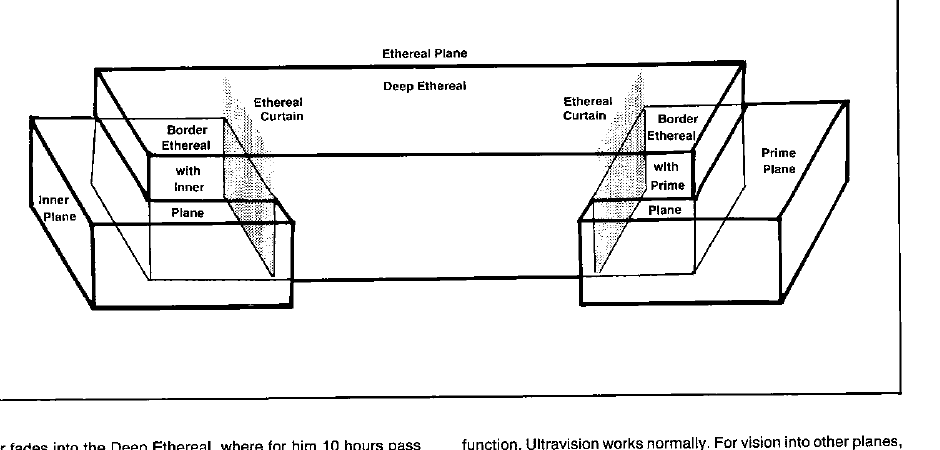

以太边界 · The Border Ethereal
以太位面的边界区域紧贴每一个原初位面区域。身处边界以太的旅行者可以观察原初位面，通常也能穿过原初位面的墙壁、门和其他障碍；但原初位面中的生物往往看不见边界以太中的旅行者。
边界以太中的旅行者可以攻击原初位面的目标，也可能被专门影响以太位面的效果攻击。物质、魔法和生物并不是在所有边界区域都拥有相同的可见性；地下城主应按法术、物品或生物描述处理。
以太边界的外观
边界以太中的原初位面通常像一幅被雾覆盖的画：颜色淡、距离难以判断，细节会随旅行者移动而改变。旅行者仍可辨认墙、道路、生物和大型物体，但不能假设远处的距离与原初位面相同。
